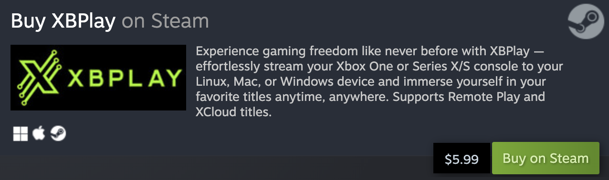

This app is licensed under GPL. Enjoy the full version!

Options Side Menu->Settings->Advanced".Options Side Menu->Settings->Display->Touch Control Behavior".--xhome Add the xhome launch param to automatically login and start an xhome stream for your default console.--xcloud=titleId Add the xcloud launch param to automatically login and start an xcloud stream on start.
The titleId should be the titleId of the game you want to play. A full list of all titleIds can be found online.